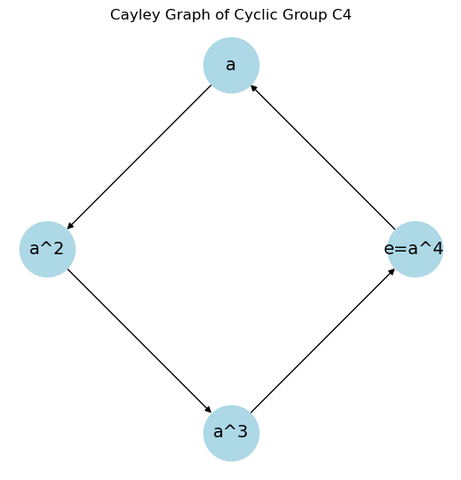
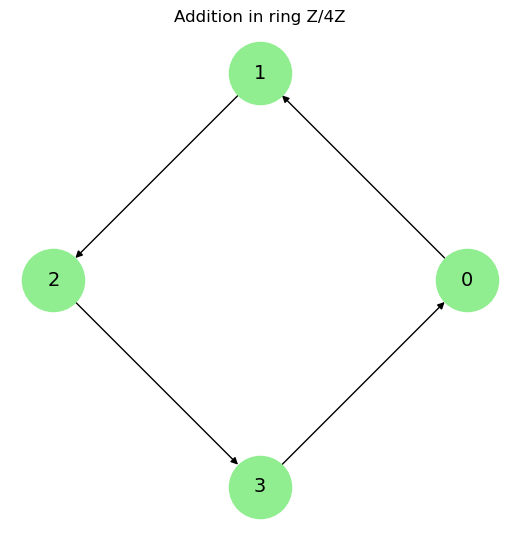
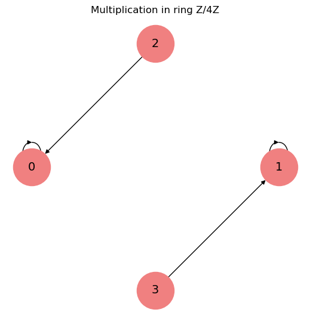
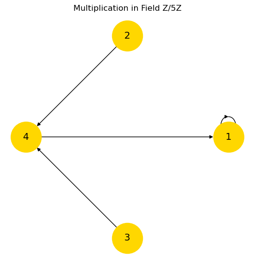

Number & Algebra#
Number Theory#


Sets & Proofs, Venn Diagrams, Number Systems & Calculation, Prime, Congruence, tests for primality, Fundamental Theorem of Arithmetic, Fermat’s little theorem, Gauss’ lemma, Euler’s theorem
Sets
└── Basic Set Concepts, Subsets, Venn Diagrams, Set Operations with Two Sets and Three Sets
Logic & Formulas
├── Statements and Quantifiers, Compound Statements, Constructing Truth Tables
├── Truth Tables for Conditional and Biconditional, Equivalent Statements, De Morgan's Laws, Logical Arguments
├── Propositions from Propositions 命题中的命题, Propositional Logic in Computer Programs 计算机程序中的命题逻辑
└── Equivalence and Validity 等价性和有效性, The Algebra of Propositions 命题的代数, The Sat Problem, Predicate Formulas谓词公式
Proofs
├── Propositions命题, Predicates谓词, The Axiomatic Method公理化方法, Our Axioms, Proving an Implication证明蕴涵
└── Proving An “If and Only If” 证明“当且仅当, Proof by Cases案例证明, Proof by Contradiction反证法
Induction 归纳法
└── Ordinary Induction, Strong Induction强归纳法 Vs. Induction Vs. Well Ordering Proofs良序证明, State Machines
Number Systems
├── Prime and Composite Numbers, Integers, Order of Operations, Rational Numbers, Irrational Numbers
└── Real Numbers, Clock Arithmetic, Exponents, Scientific Notation, Arithmetic Sequences, Geometric Sequences
Number Theory
├── Divisibility可除性, Greatest Common Divisor最大公约数, Prime, The Fundamental Theorem of Arithmetic 算术基本定理
├── Alan Turing 阿兰图灵, Modular Arithmetic 模算术, Remainder Arithmetic 余数算术, Turing’S Code (Version 2.0) 图灵密码
└── Multiplicative Inverses and Cancelling乘法逆和抵消, Euler's Theorem, RSA Public Key Encryption 公钥加密
Number Representation and Calculation
├── Hindu-Arabic Positional System, Early Numeration Systems, Converting with Base Systems
└── Addition and Subtraction in Base Systems, Multiplication and Division in Base Systems
Sequences, Probability and Counting Theory （前面就是组合论了）
├── Sequences and Their Notations, Arithmetic Sequences, Geometric Sequences, Series and Their Notations
└── Counting Principles, Binomial Theorem, Probability
# Investigating Pi and e
from sympy import *
x=symbols('x')
print(limit(sin(x)/x,x,0))
print(limit(pow(1+1/x,x),x,oo)) # natural constant e
# job 1: estimate pi in series
import math
sum = 0 # Initialize the sum to 0
for n in range(10000): # Iterate over the terms of the series
term = 4*(-1)**n / (2*n + 1) # Compute the nth term of the series
sum += term # Add the term to the sum
print("Pi Estimate:", sum) # Multiply the sum by 4 to get an estimate of pi
# job 1.1: estimate pi using a limit
n = 9 ; print("pi is", n*math.sin(math.radians(180/n)))
n = 99 ; print("pi is", n*math.sin(math.radians(180/n)))
n = 999999999; print("pi is", n*math.sin(math.radians(180/n)))
# job 2: estimate e in series
sum1 = 1 # Initialize the sum and factorial to 1
factorial = 1
for n in range(1, 10000): # Iterate over the terms of the series
factorial *= n # Compute the nth term of the series
term = 1 / factorial
sum1 += term
print("e Estimate:", sum1)
# job 2.1: estimate e in compound form
n = 100 ; print("Estimated value of e:", (1 + 1/n) ** (n*1))
n = 1000 ; print("Estimated value of e:", (1 + 1/n) ** (n*1))
n = 100000000 ; print("Estimated value of e:", (1 + 1/n) ** (n*1))
Above is stupid Python, now let’s use Sage:
var('x,n')
ff = sqrt(sum(6/n^2 ,n,1,oo, hold=True)) # converged limit of pi
s(ff == ff.unhold().n())
epow = sum(x^n/factorial(n),n,0,oo, hold=True) # 8 Power Series of e
s(epow == epow.unhold())
Sage practice
Ring: e.g. Integer ZZ
Field: e.g. Rational QQ, Real RR, Complex CC
a=1; print(type(a));
b=2/3; print(type(b));
d=CC(1+I); print(type(d))
<class 'sage.rings.integer.Integer'>
<class 'sage.rings.rational.Rational'>
<class 'sage.rings.complex_mpfr.ComplexNumber'>
# RSA & Number Theory
p=37; q=73; c=5; n=p*q; L=lcm(p-1,q-1); d=inverse_mod(c,L)
print('L: ', L)
print('d: ', d)
x=33
print('Original message: ', x)
r = x^c%n; r
print('Encrypted message: ', r)
dm=r^d%n;
print('Decrypted message: ', dm)
# RSA on a string of characters
symbols=[chr(i) for i in range(ord('A'),ord('Z')+1)]
symbols.append('.'); symbols.append(','); symbols.append('!'); symbols.append(' ');
def encrypt(s):
ms = [1+symbols.index(s[i]) for i in range(0,len(s))];
es = map(lambda x: x^c%n,ms)
return es
def decrypt(x):
ds = map(lambda x: x^d%n, x)
return ''.join([symbols[i-1] for i in ds])
message = "THE TIME HAS COME."
emessage = encrypt(message)
print(emessage)
dmessage = decrypt(emessage)
print(dmessage)
L: 72
d: 29
Original message: 33
Encrypted message: 604
Decrypted message: 33
<map object at 0x73b50694a380>
THE TIME HAS COME.
Continued Fraction (Diophantine Approximation)#
Numerators and denominators \({N_i}\) and \({D_i}\) could be any sequences or functions
(* 连分数 Continued Fraction for Sqrt[2] *)
ContinuedFraction[Sqrt[2], 10] (*generate D series*)
Convergents[ContinuedFraction[Sqrt[2], 10]] (*generate each CF*)
(*now do it manually,
Fold[f, x, {a, b, c, d}] == f{f{f{f[x,a],b},c},d}
#1 is the accumulated result; #2 is the the current element;
'&' at the end: defining an anonymous function *)
aa[x] := Fold[#2 + 1/#1 &, x, Reverse[x]];
aa[ContinuedFraction[Sqrt[2], 2]]
{1, 2, 2, 2, 2, 2, 2, 2, 2, 2}
{1, 3/2, 7/5, 17/12, 41/29, 99/70, 239/169, 577/408, 1393/985, 3363/2378}
aa[{1, 2}]
Algebra#
Inequalities, Polynomial, Curves, Complex Numbers, Factorization, Trigonometry, Functions
Ending with Euler Formula which unify \(sin\), \(i\), \(e\) and the whole fundamental Algebra
Algebra
├── Algebraic Expressions, Linear Equations in One Variable with Applications
├── Linear Inequalities in One Variable with Applications, Ratios and Proportions, Graphing Linear Equations and Inequalities
├── Quadratic Equations with Two Variables with Applications, Functions, Graphing Functions
└── Systems of Linear Equations in Two Variables, Systems of Linear Inequalities in Two Variables, Linear Programming
1. Functions
├── Functions and Function Notation, Domain and Range, Rates of Change and Behavior of Graphs
└── Composition of Functions, Transformation of Functions, Absolute Value Functions, Inverse Functions
2. Linear Functions
└── Linear Functions, Graphs of Linear Functions, Modeling with Linear Functions, Fitting Linear Models to Data
3. Polynomial and Rational Functions
├── Complex Numbers, Quadratic Functions, Power Functions and Polynomial Functions, Graphs, Dividing Polynomials
└── Zeros of Polynomial Functions, Rational Functions, Inverses and Radical Functions, Modeling Using Variation
4. Exponential and Logarithmic Functions
├── Exponential Functions, Graphs, Logarithmic Functions, Graphs, Logarithmic Properties
└── Exponential and Logarithmic Equations, Exponential and Logarithmic Models, Fitting Exponential Models to Data
5. Trigonometric Functions
├── Angles, Unit Circle: Sine and Cosine Functions
└── The Other Trigonometric Functions, Right Triangle Trigonometry
6. Periodic Functions
└── Graphs of the Sine and Cosine Functions, Graphs of the Other Trigonometric Functions, Inverse Trigonometric Functions
7. Trigonometric Identities and Equations
├── Solving Trigonometric Equations with Identities, Sum and Difference Identities, Double-Angle
├── Half-Angle, and Reduction Formulas, Sum-to-Product and Product-to-Sum Formulas
└── Solving Trigonometric Equations, Modeling with Trigonometric Functions
8. Applications of Trigonometry
├── Non-right Triangles: Law of Sines, Law of Cosines, Polar Coordinates, Graphs
└── Polar Form of Complex Numbers, Parametric Equations, Parametric Equations: Graphs, Vectors
9. Systems of Equations and Inequalities
├── Systems of Linear Equations: Two Variables, Three Variables
├── Systems of Nonlinear Equations and Inequalities: Two Variables, Partial Fractions, Matrices and Matrix Operations
└── Solving Systems with Gaussian Elimination, Solving Systems with Inverses, Solving Systems with Cramer's Rule
10. Analytic Geometry
└── The Ellipse, The Hyperbola, The Parabola, Rotation of Axes, Conic Sections in Polar Coordinates
Euler’s formula#
Euler’s formula arises naturally as a solution to DE, such as the second-order linear DE: \(y''+y=0\)
establishes the fundamental relationship btw exponential and trigonometric functions, and paves a way to complex numbers, complex functions, and related theory.
comprehend all whenever expressions \(sin\), \(e\), \(i\) are involved. It actually complete a ring among these symbols and relationships.

Linear Algebra#
Vector Space, Linear Transformations, Matrices, Images & Kernels, Eigenvalues, Eigenvectors
Abstract Algebra(Group, Ring, Field)#
Graphing Group/Ring/Field#
# Fig-1: Group (visualize Cayley graph for C4 = {e, a, a^2, a^3}, where a^4 = e)
import networkx as nx
import matplotlib.pyplot as plt
G = nx.DiGraph() # Define
elements = ["e=a^4", "a", "a^2", "a^3"]
edges = [("e=a^4", "a"), ("a", "a^2"), ("a^2", "a^3"), ("a^3", "e=a^4")]
G.add_edges_from(edges)
pos = nx.circular_layout(G) # Position nodes in a circular layout
plt.figure(figsize=(5, 5))
nx.draw(G, pos, with_labels=True, node_color="lightblue", edge_color="black", node_size=2000, font_size=14)
plt.title("Cayley Graph of Cyclic Group C4")
plt.s()
####################
# Fig-2: Ring Structure Z/4Z (visualize addition & multiplication separately)
G_add = nx.DiGraph()
elements = ["0", "1", "2", "3"]
edges_add = [("0", "1"), ("1", "2"), ("2", "3"), ("3", "0")]
G_add.add_edges_from(edges_add)
# Draw addition graph
plt.figure(figsize=(5, 5))
nx.draw(G_add, pos=nx.circular_layout(G_add), with_labels=True, node_color="lightgreen", edge_color="black", node_size=2000, font_size=14)
plt.title("Addition in ring Z/4Z")
plt.s()
# Define multiplication graph
G_mult = nx.DiGraph()
edges_mult = [("1", "1"), ("2", "0"), ("3", "1"), ("0", "0")] # 2*2=0, 3*3=1, etc.
G_mult.add_edges_from(edges_mult)
# Draw multiplication graph
plt.figure(figsize=(5, 5))
nx.draw(G_mult, pos=nx.circular_layout(G_mult), with_labels=True, node_color="lightcoral", edge_color="black", node_size=2000, font_size=14)
plt.title("Multiplication in ring Z/4Z")
plt.s()
####################### Field: Z/5Z, fully connected multiplication graph
G_field = nx.DiGraph()
elements = ["0", "1", "2", "3", "4"]
edges_field = [("1", "1"), ("2", "4"), ("3", "4"), ("4", "1")] # Multiplicative inverses
G_field.add_edges_from(edges_field)
# Draw the field structure
plt.figure(figsize=(5, 5))
nx.draw(G_field, pos=nx.circular_layout(G_field), with_labels=True, node_color="gold", edge_color="black", node_size=2000, font_size=14)
plt.title("Multiplication in Field Z/5Z")
plt.s()



